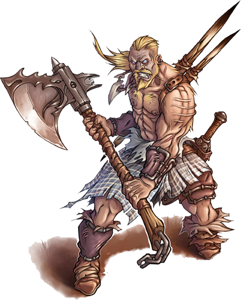

Berserker
Humanoide mediano (humano), cualquiera caótico
Armadura 13 (armadura de piel)
Puntos de vida 67 (9d8 + 27)
Velocidad 30 pies
| FUE | DES | CON | INT | SAB | CAR |
|---|---|---|---|---|---|
| 16 (+3) | 12 (+1) | 17 (+3) | 9 (-1) | 11 (+0) | 9 (-1) |
Sentidos Percepción pasiva 10
Idiomas un idioma, normalmente común
Desafío 2 (450 XP)
Temerario.Al principio del turno el Berserker puede ganar ventaja en todas las tiradas de ataque que realice ese turno, pero los ataques que reciba también tendrán ventaja hasta el inicio de su siguiente turno
Acciones
Gran Hacha. Ataque con arma de mele: +5 a golpear, alcance 5 pies, un objetivo. Golpe: 9 (1d12 + 3) daño cortante
